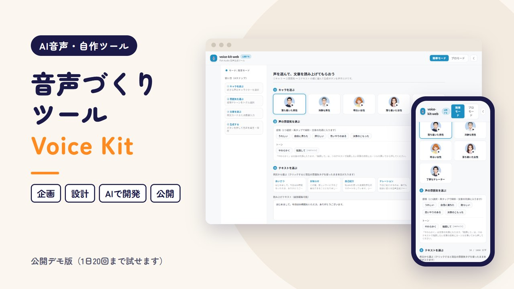

音声づくりツール Voice Kit
AI音声・自作ツール
「AIの声を使ってみたい。でも設定やプログラムは難しい」という人のために作ったツールです。
声・雰囲気・文章を選んで押すだけで読み上げる画面を設計し、コードを1行も書かずにAIで開発しました。
2026年10月のオンライン説明会（約35名）で紹介し、Windows アプリ版と Mac でも使える Web 版も作りました。
画面・作品


たかぼうへのご相談はこちらから

「AIの声を使ってみたい。でも設定やプログラムは難しい」という人のために作ったツールです。
声・雰囲気・文章を選んで押すだけで読み上げる画面を設計し、コードを1行も書かずにAIで開発しました。
2026年10月のオンライン説明会（約35名）で紹介し、Windows アプリ版と Mac でも使える Web 版も作りました。
たかぼうへのご相談はこちらから